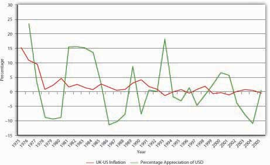
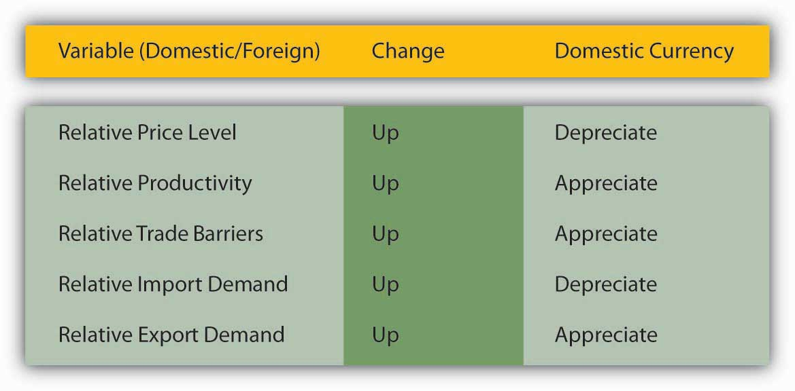

If transaction costs are zero, identical goods should have the same price no matter what unit of account that price is expressed in. Or so says the law of one price. The reason is clear: if they did not, arbitrageurs would buy where the good was cheapest and sell where it was highest until the prices were equalized. Where transaction costs are nontrivial or goods are similar but not identical, we don’t expect a single price, but rather a band or range of prices. So if product X cost $100 in Country Y and $110 in Country Z, and it costs $10 to transport X from Y to Z, there would be no arbitrage opportunity and the price differential could persist. If the price of X rose in Z to $120, we’d expect it to increase in Y to at least $110, or arbitrageurs would start buying it in Y and selling it in Z until the prices were within $10 of each other. Similarly, Japanese-style beer is not the same as U.S.-style beer. But it is close enough that we would not expect the prices to vary widely or otherwise consumers would dump Bud, Miller, and Coors in favor of Kirin and Sapporo (or vice versa, as the case may be).
This sort of analysis has led economists to apply the law of one price to entire economies in what they call the theory of purchasing power parity (PPP), which predicts that, in the long run, exchange rates will reflect price level changes. In other words, higher rates of inflation in Country A compared to Country B will cause Country A’s currency to depreciate vis-à-vis Country B’s currency in the long run. In the short run, however, matters are quite different, as Figure 18.4 "Purchasing power parity, United Kingdom and United States, 1975–2005" shows. If PPP held in the short run, USD should have appreciated against the pound (the blue line should be above zero) every year in which inflation in the United Kingdom exceeded inflation in the United States (the red line is above zero), and vice versa. Clearly, that was not the case. But PPP has the long-run right, in sign but not quite in magnitude. Between 1975 and 2005, prices rose in Great Britain a shade under 205 percent all told. In that same period, they rose just under 142 percent in the United States. In other words, prices rose about 44 percent ([205 − 142]/142) more in Britain than in the United States. Over that same period, the pound sterling depreciated 22 percent against USD (from £.4505 to £.5495 per USD or from $2.22 to $1.82 per £1), just as PPP theory predicts it should have. But why did the pound weaken only 22 percent against the dollar?
Figure 18.4 Purchasing power parity, United Kingdom and United States, 1975–2005
For starters, not all goods and services are traded internationally. Land and haircuts come immediately to mind, but many other things as well when you think about it hard enough. There is no reason for prices of those goods to be the same or even similar in different countries. Arbitrageurs cannot buy low in one place and sell high in another because transaction costs are simply too high. (For example, you could get a great haircut in Malaysia for fifty cents but it would cost several thousand dollars and several days to get there and back.)
Figure 18.5 Determinants of exchange rates in the long run
In addition, three other factors affect exchange rates in the long run: relative trade barriers, differential preferences for domestic and foreign goods, and differences in productivity. Tariffs (taxes on imported goods), quotas (caps on the quantity of imported goods), and sundry nontariff barriers (NTBs) to tradewww.wto.org/english/thewto_e/whatis_e/tif_e/agrm9_e.htm increase demand for domestic over foreign goods, thereby allowing the domestic currency to appreciate without injuring sales of domestic goods. Preferences for domestic goods have the same effect; preferences for foreign goods (French wine, German beer, Japanese automobiles) have the opposite effect, depreciating the domestic currency by maintaining demand for foreign goods even in the face of higher prices. Finally, as a country becomes relatively more productive than other countries, the price of its wares tends to fall. Its currency, therefore, appreciates because it can do so without injuring exports. If a country’s productivity lags that of other countries, by contrast, its currency will depreciate. Of course, this is all ceteris paribus. Figure 18.5 "Determinants of exchange rates in the long run" summarizes the discussion.